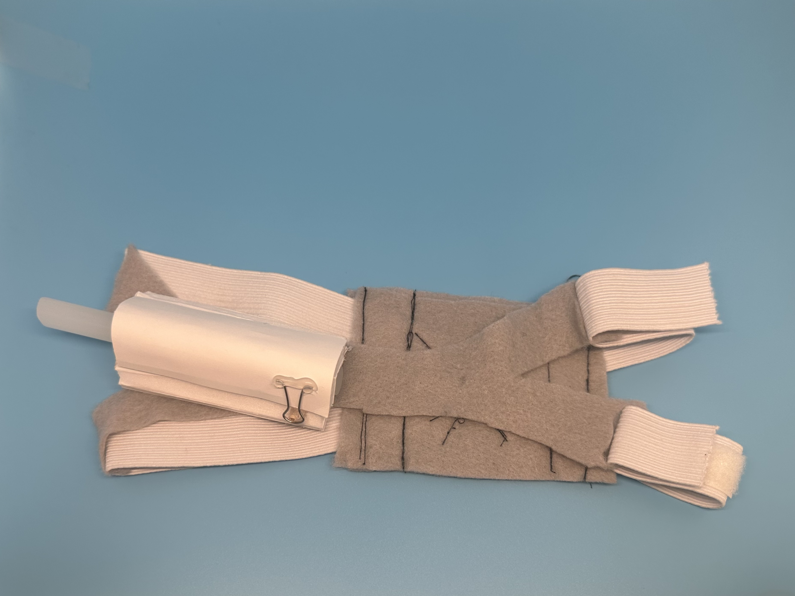

Revision 1: Low resolution prototype. We used foamcore, felt, and elastic to create this revision
I have completed two semesters of Senior Design at the University of Pittsburgh. My team was tasked with identifying a clinical unmet need through ethnographical research. We decided to address how we might mitigate the untimely removal of nasogastric (NG) tubes in pediatric patients aged 1-6 years old. After deciding on a problem to address, we went through the process of designing and developing a solution. We came up with the Nasogastric Tube Securement device, a headgear with a clip that protect the NG tube. After entering our design freeze, we started our verification and validation efforts. While conducting these tests, we worked on FDA regulatory documents and pre-submissions.